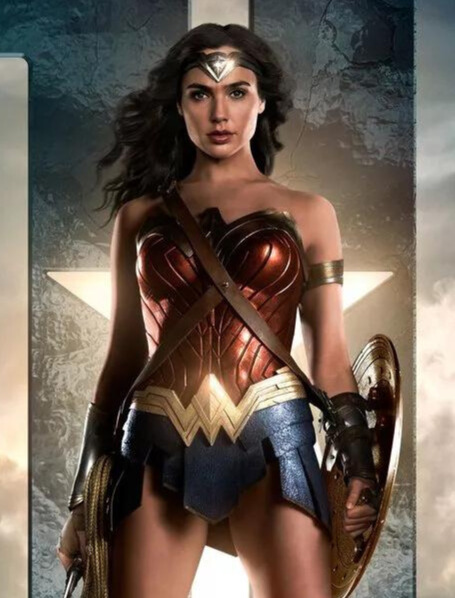

MULHER-MARAVILHA / DIANA PRINCE
Mulher-Maravilha (em inglês, Wonder Woman) é uma personagem fictícia de histórias em quadrinhos publicadas pela editora estadunidense DC Comics, originalmente é uma super-heroína guerreira de origem greco-romana, alter ego da Princesa Diana de Themyscira, ilha oculta, também conhecida como Ilha Paraíso, local da civilização de amazonas (como as figuras da lenda grega-romana). Como emissária de Themyscira para o Mundo do Homem, assume o pseudônimo de Diana Prince, identidade secreta que ela adotou para se aproximar da humanidade no Universo DC. Membro honorário da Sociedade de Justiça da América, primeiro grupo de super-heróis a aparecer historicamente nas Histórias em Quadrinhos. Na Era Prata, fundadora da Liga da Justiça permanecendo até hoje. Sua primeira aventura foi na revista All Star Comics #8 de dezembro de 1941, nos Estados Unidos, escrita pelo psicólogo, inventor, escritor William Moulton Marston, com pseudônimo Charles Moulton, co-criada por sua esposa, a advogada Elizabeth Marston e desenhada por Harry G. Peter. Sua primeira aventura foi na revista All Star Comics #8 de dezembro de 1941, nos Estados Unidos. A personagem tem sido publicada continuamente desde então. A história tem continuação direta em Sensation Comics #1 de janeiro de 1942. Com o sucesso alcançado, ela ganhou sua própria revista em quadrinhos em maio de 1942, Wonder Woman #1, que foi transferida exclusivamente para a DC Comics em 1944.